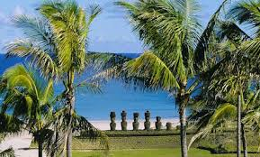
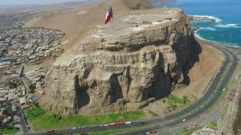
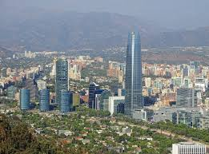
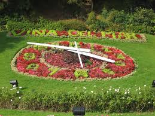
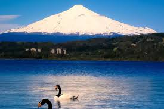
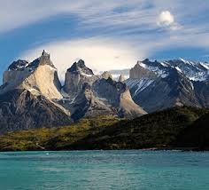
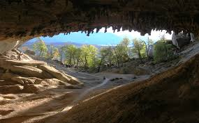
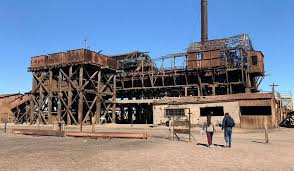

Anakena es una playa icónica ubicada en la Isla de Pascua (Rapa Nui), Chile. Es conocida por sus
arenas blancas, aguas turquesas y palmeras, lo que la convierte en un destino tropical único en
esta isla volcánica. Además de su belleza natural, Anakena tiene gran importancia histórica y
cultural, ya que es el lugar donde, según la leyenda, llegaron los primeros pobladores polinesios
a la isla. En la playa, también se pueden ver impresionantes moáis (estatuas monumentales de
piedra) que miran hacia el interior de la isla, como los que se encuentran en el Ahu Nau Nau.

El Morro de Arica es un imponente promontorio rocoso que se eleva unos 130 metros sobre el nivel
del mar, ubicado en la ciudad de Arica, en el extremo norte de Chile. Es un símbolo histórico de
gran relevancia, ya que fue el escenario de la Batalla de Arica durante la Guerra del Pacífico en
1880, cuando las tropas chilenas lograron tomar la ciudad.
Desde la cima del morro, se puede disfrutar de una vista panorámica espectacular de Arica, sus playas
y el océano Pacífico. Además, en su cumbre se encuentra un museo que conmemora la batalla y un monumento
en honor a los soldados caídos.

El Costanera Center es el complejo arquitectónico más grande y moderno de Chile, ubicado en el
corazón de Santiago, en el distrito de Providencia. Su elemento más destacado es la Gran Torre
Santiago, un rascacielos de 300 metros de altura, lo que lo convierte en el edificio más alto de
América Latina.
El Costanera Center alberga un extenso centro comercial con seis niveles, donde se encuentran
tiendas de marcas internacionales, restaurantes, cines, y servicios. Además, en su cima, se
encuentra el mirador Sky Costanera, que ofrece vistas panorámicas espectaculares de Santiago y
las montañas circundantes, especialmente al atardecer.

El Reloj de Flores de Viña del Mar es uno de los íconos turísticos más famosos de la ciudad costera
chilena. Este reloj, ubicado a los pies del Cerro Castillo, cerca de la playa, fue inaugurado en
1962 para conmemorar el Mundial de Fútbol que se realizó en Chile ese año.
El reloj está compuesto de flores de temporada que forman los números y decoran el área alrededor
de las manecillas, que funcionan con un mecanismo similar al de un reloj tradicional. Con su
vibrante colorido y su ubicación estratégica, es un lugar muy visitado tanto por turistas como por
locales, ideal para tomar fotografías y disfrutar del ambiente costero de Viña del Mar

El Lago Villarrica es un hermoso lago de origen glaciar en la región de la Araucanía, rodeado de
bosques y con el imponente volcán Villarrica a su lado. Es un destino popular para actividades como
la pesca, natación y deportes acuáticos, además de ofrecer paisajes ideales para el turismo de
aventura y descanso.

Las Torres del Paine son un conjunto icónico de picos de granito situados en el Parque Nacional
Torres del Paine, en la Patagonia chilena. Rodeadas de glaciares, lagos y vastas pampas, estas
montañas forman parte de uno de los paisajes más espectaculares de Chile. El parque es mundialmente
conocido por su biodiversidad y es un destino privilegiado para el trekking y el ecoturismo

La Cueva del Milodón es una caverna ubicada cerca de Puerto Natales, en la Patagonia chilena.
Es famosa por haber sido el lugar donde se descubrieron restos de un milodón, un mamífero herbívoro
extinto que vivió hace más de 10,000 años. Además de su importancia paleontológica, la cueva es un
atractivo turístico dentro del Monumento Natural Cueva del Milodón, rodeada de paisajes
espectaculares de la Patagonia.

Humberstone es una antigua oficina salitrera ubicada en el desierto de Atacama, en el norte de Chile. Fundada en el
siglo XIX, fue un importante centro de producción de salitre, vital para la economía chilena. Abandonada en la
década de 1960, hoy es un sitio arqueológico declarado Patrimonio de la Humanidad por la UNESCO. Sus edificios
históricos y su atmósfera desértica ofrecen un fascinante vistazo a la vida en las salitreras de la época.

Volver